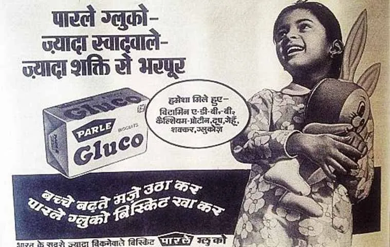
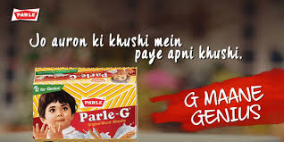

How India's most trusted biscuit evolved from mass staple to emotional family icon across generations.
Parle-G mastered legacy evolution: Swaad Bhare Shakti Bhare built mass trust, G Maane Genius modernized emotional relevance. Generations connected through one biscuit.
Case study analyzes mass-market foundation + intelligent repositioning. FMCG timelessness blueprint: evolve meaning, preserve memory.
Truth: India trusts what grandmother approved.
1980s TV revolution insight: family biscuit for all ages. "Swaad Bhare, Shakti Bhare" = taste + energy. Grandparents + kids = instant familiarity across generations.
Doordarshan mass reach + memorable jingle = cultural penetration. Affordable trust positioning dominated middle-class tea rituals and school lunches.
"Simplicity created habit. Swaad + Shakti justified parental purchase while delighting kids. Mass-market memory hook still resonates decades later."
Broad positioning = mass dominance. Habit formation > aspiration selling. Foundation for decades of loyalty.

Modern parenting evolution: G = Genius (not just glucose). Empathy, kindness, decision-making > physical strength. Preserved legacy while capturing new psychology.
Short emotional stories showed kids solving real-life situations intelligently. TV reach + digital depth = full-funnel relevance for younger parents.
"Legacy evolution masterclass. Protected decades of trust while becoming modern. Emotional intelligence > academic smarts = perfect parenting alignment."
TV awareness → digital engagement. Meaningful evolution kept Parle-G relevant without alienating heritage consumers.

"Swaad Bhare Shakti Bhare" jingle = decades recall. Simple truths scale across generations.
Grandparents + kids = unbreakable habit. Broad family targeting > narrow segmentation.
Glucose → emotional intelligence. Meaningful evolution preserves trust, captures relevance.
Daily routines > occasional treats. Ritual positioning creates consumption autopilot.
TV era mass reach = urban/rural penetration. Timing + medium alignment = market ownership.
Legacy endorsement > celebrity hype. Intergenerational trust = pricing power.
Parle-G perfected FMCG timelessness: Swaad Bhare Shakti Bhare built mass foundation, G Maane Genius evolved emotional relevance. Biscuit became family ritual.
Universal blueprint: simple memory hooks + meaningful evolution. Parle-G proved mass brands thrive through cultural consistency, not constant reinvention.
Greatness = grandmother's approval + kid's delight.
At Brand Business Talk, we help brands with research, strategy, market insights, and growth recommendations. Let's build your brand growth strategy together.